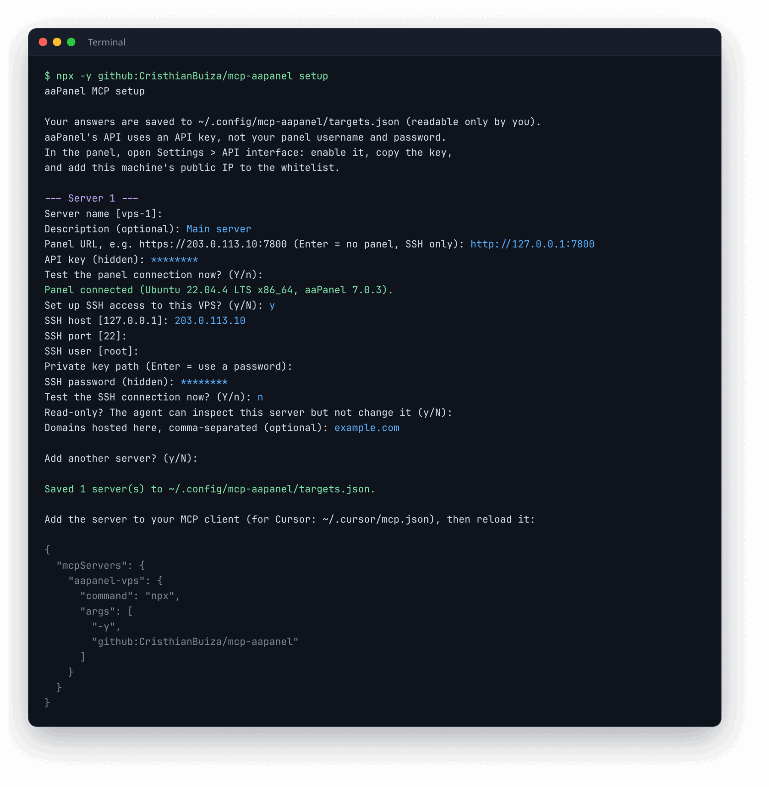
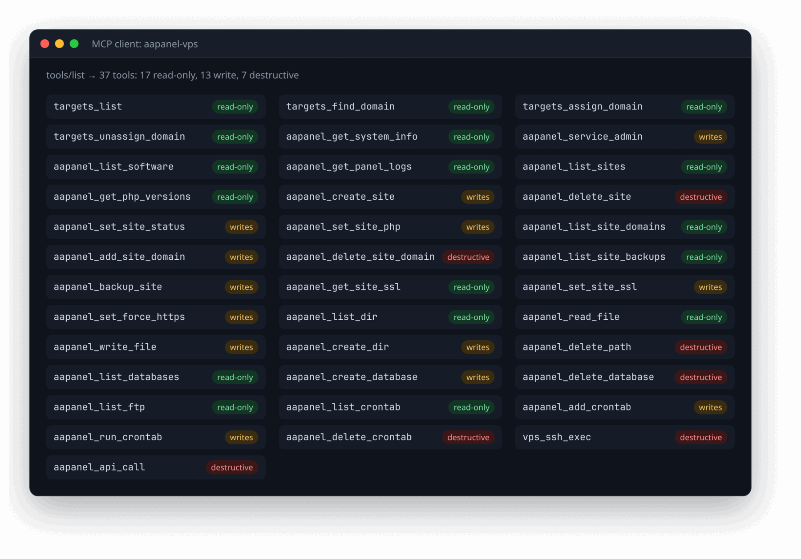
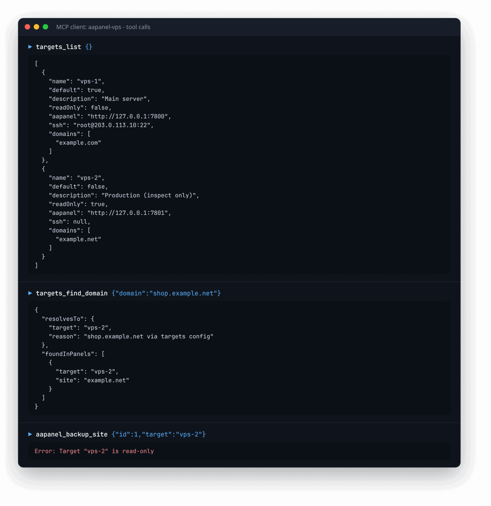
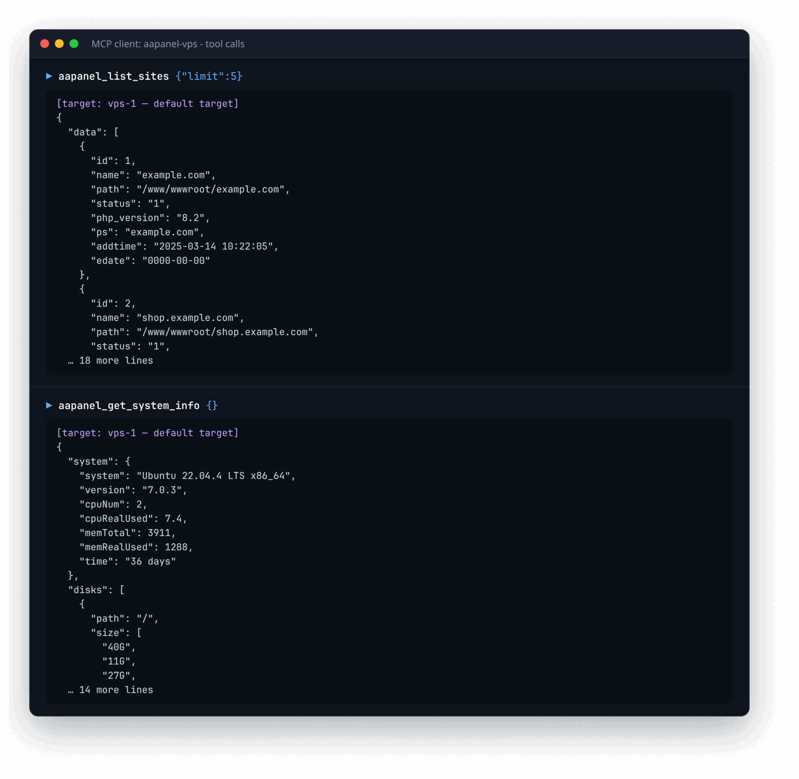

Your aaPanel servers, operated by your AI agent.
mcp-aapanel connects Cursor, Claude Desktop, VS Code or any MCP client to one or more aaPanel servers through the panel API, and to each VPS over SSH. Agents can manage websites, domains, SSL, files, databases, cron jobs and services, with read-only mode for production.
npx -y github:CristhianBuiza/mcp-aapanel setup
Needs Node.js 21.7+. The guided setup asks for each server's panel URL, API key and optional SSH login, tests them and saves them privately.
How it works
The server runs on your machine and speaks MCP over stdio. Each call is routed to the right server (explicitly, or from the domain it is about), signed with that panel's API key, or run over SSH.
Features
Dedicated tools for the common panel tasks, plus a raw API call and SSH for everything else.
▦Websites
List, create (with FTP and MySQL), delete, start/stop, change PHP version, bind domains and take backups.
⛨SSL
Read certificate status with the private key redacted, install a custom certificate, and toggle forced HTTPS.
▤Files & logs
Browse directories and read or write files such as nginx vhosts and site logs.
◫Databases, FTP, cron
Manage MySQL databases, list FTP accounts, and add, run or delete scheduled tasks.
⇶Multi-server routing
Name each server. Calls about shop.example.com go to the server that hosts it, automatically.
>_SSH & raw API
vps_ssh_exec runs shell commands; aapanel_api_call reaches any panel endpoint.
Setup in four steps
No config files to write by hand: the setup command asks for each value, tests the panel and SSH, and stores everything in a file only you can read, outside any repository.
Enable the aaPanel API
In each panel open Settings > API interface, enable it, copy the key and add your machine's public IP to the whitelist. aaPanel's API uses this key, not your panel username and password.
curl https://api.ipify.org # shows the IP to whitelist
Run the guided setup
For each server it asks for a name, the panel URL and API key (hidden), TLS verification, optional SSH host, user and key or password, read-only mode and hosted domains. It tests each connection and can pin the SSH host key.
npx -y github:CristhianBuiza/mcp-aapanel setup
Add it to your MCP client
Setup prints this snippet. For Cursor, paste it into ~/.cursor/mcp.json. No secrets go in the client config.
{
"mcpServers": {
"aapanel-vps": { "command": "npx", "args": ["-y", "github:CristhianBuiza/mcp-aapanel"] }
}
}
Reload and ask
Reload MCP servers in your client and try: "Show CPU, memory and disk on vps-1" or "Enable forced HTTPS on example.com". Run setup again any time to add more servers.
Screenshots
Real output from the server, captured from a throwaway install.
These were captured by running the actual server from GitHub against two simulated aaPanel APIs on localhost, with placeholder credentials (YOUR_API_KEY, YOUR_SSH_PASSWORD) and documentation-only IPs and domains.




Built to be safe
Panel keys and SSH logins give full control of a server, so the server gives you ways to limit what an agent can do.
- Private settings file. Saved with permissions 600 in your user config folder, never inside a repository.
- Read-only servers. Mark production read-only and every write, SSH and raw API tool is refused there.
- SSH host-key pinning. Setup offers to pin the server's key; connections to any other key are refused.
- Redacted secrets. SSL private keys are hidden unless requested, and
targets_listnever returns credentials.